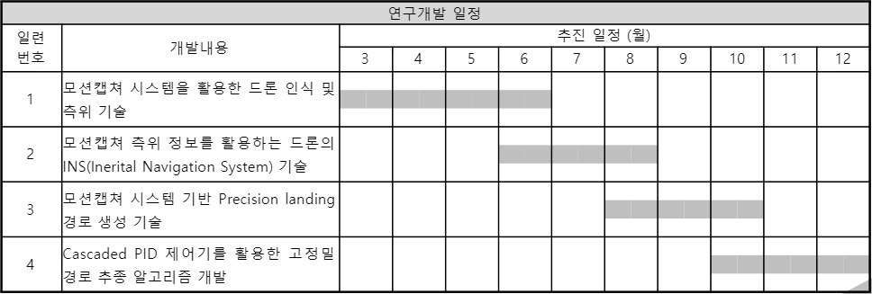
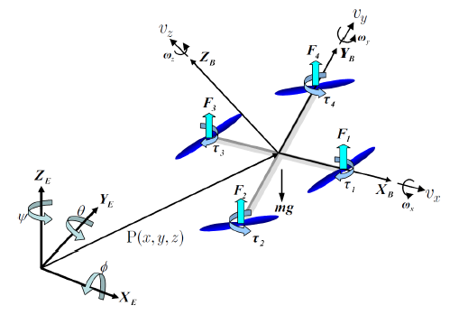
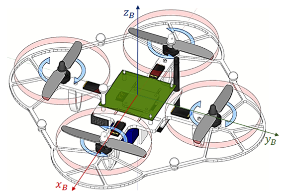

POSTECH ICT V+ 4.0 매칭 기업 ISON 2021-05-10 Drone Controller Design (1)
13주차, 드론 동역학 및 제어기 설계 1 (21.05.10~21.05.21)
이번 13주차에서는 아래 추진일정에 따라 모션캡쳐 시스템을 활용한 드론 인식 및 측위 기술 개발에 관련한 내용을 포스팅한다.
지난 11주차 포스팅에서 드론 H/W를 제작하였다. 이제는 제작한 드론을 제어하기 위한 제어 S/W가 드론에 탑재되어야 한다. 드론 동역학 설명을 시작으로 드론 FC (Flight Controller)에 탑재될 제어기가 왜 이렇게 구성되었는지에 대한 내용을 전달한다.

- 드론 동역학
- 목표: 드론 동역학 이해
- 목적: 드론 동역학을 이해함으로써, 각 로터의 회전을 이용해 기체좌표계 그리고 나아가 관성좌표계에서 동체의 Position과 angle을 찾아내는 것에 그 목적이 있다.
드론이라고 하면 손쉽게 떠올릴 수 있는 쿼드로터는 4개의 로터로 구동되는 방식의 UAV (Unmanned Aerial Vehicle) 이다.

(1) 좌표계 정의
가장 먼저 드론 동역학을 이해하기 위해서 관성좌표계와 기체좌표계를 아래와 같이 정의한다.

관성좌표계에서 표현되는 드론의 위치와 관성좌표계에서 바라본 기체좌표계의 오일러 회전 각은 아래와 같이 $p,\eta$ 로 표현할 수 있다.
기체좌표계에서 축 방향으로의 선속도와 좌표축에 대한 각 속도는 아래와 같이 $v_B,\omega$로 표현 가능하다.
여기서 명심해야 할 것은 $p,\eta$ 은 관성좌표계에서 정의 된 성분이고, $v_B,\omega$는 기체좌표계에서 정의된 성분이라는 것이다.
기체좌표계에서 관성좌표계로의 회전 변환은 아래와 같이 표현할 수 있다.
여기서, ${R_z}(\psi ),{R_y}(\theta ),{R_x}(\phi)$는 아래와 같다.
회전 변환 행렬 $R$은 Orthogonal 하기 때문에, $R^{-1}=R^T$이고 이는 관성좌표계에서 기체좌표계로의 회전변환이 될 수 있다.
관성좌표계에서의 각속도는 $C$ matrix를 이용하여 기체좌표계로 변환할 수 있다.
(2) 드론에서 발생 가능한 힘
쿼드콥터 타입의 드론은 symmetric한 구조로 가정되기 때문에 Inertia matrix는 아래와 같이 표현한다.
로터의 각속도를 $\omega_i$라고 하고, 로터의 회전에 의해서 발생하는 로터 축으로의 추력을 $f_i$라고 하자.
로터의 각속도와 로터 축으로의 추력은 아래와 같은관계가 있다. 여기서 $k$는 lift constant이다.
또 로터축으로 발생되는 토크 ${\tau _{M_i}}$와는 아래와 같은 관계가 있으며, $I_M$은 로터의 관성모멘트이고, $b$는 drag constant이다.
로터가 생성하는 추력의 총합은 아래와 같다.
로터가 생성하는 추력은 드론의 구조상 항상 기체좌표계의 $z-axis$ 방향으로 작용한다.
따라서 기체좌표계에서 드론의 추력은 $T^B$라고 표기하며 아래와 같이 표현할 수 있다.
또한, 기체에서 발생하는 토크 $\tau^B$는 기체좌표계를 각 축에 따라서 $\tau_{x},\tau_{y},\tau_{z}$성분이 있으며, 아래와 같이 정의할 수 있다.
여기서 주의해야 할 것은, $\tau_{x},\tau_{y},\tau_{z}$가 기체좌표계에서 기체좌표계의 축을 따라 정의한 토크라는 것이다.
$l$은 로터와 드론 Mass center까지의 거리이고, $k$는 lift constant이다.
(3) Newton-Euler equation
드론은 강체 역학으로 해석할 수 있으며, 따라서 드론의 동역학을 Newton-Euler equation으로 해석할 수 있다.
기체좌표계에서 질량을 가속하기위한 힘 $m\dot{v_B}$과 기체의 원심력 (Centrifugal Force) $\omega \times(mv_B)$은 중력에의한 힘$R^Tg=R^{-1}g$과 기체에서 발생하는 추력 $T_B$와 같다.
여기서 원심력 $\omega \times(mv_B)$은 가상의 힘이므로 무시한다.
따라서 위의 식은 관성좌표계에서 아래와 같이 표현 할 수 있다.
여기서 는 드론에서 발생하는 추력이 $z-axis$성분만 존재하므로 $R$ 에서 $z-axis$ 성분에 대한 벡터이다.
또 기체좌표계에서 관성모멘트의 가속과 구심력 (Centripetal Force) $\omega \times(I\omega)$ ,Gyroscophic force $\Gamma$는 외부에서 작용하는 토크 와 동일하다. 이는 아래와 같이 표현이 .
여기서 $\omega_T=\omega_1-\omega_2+\omega_3-\omega_4$ 이다.
여기까지 우리는 기체좌표계에서의 각 가속도를 표현할 수 있게 되었다. 여기서 우리는 $\dot{\eta}=C^{-1}\omega$인 것을 알고있다. 따라서 관성좌표계에서의 각 가속도는 아래와 같이 표현할 수 있다.
(3) Simulation
(2)까지 우리는 드론의 동역학을 이해해 보았다. 따라서, 로터에서 발생하는 회전에 따라서 드론이 관성좌표계 그리고 기체좌표계에서 어떤 거동을 보일지를 수식적으로 해석할 수 있다.
이후, Matlab에서 각 로터의 회전에 대한 시뮬레이션 툴을 개발하였다.
%%%%%%%%%%%%%%%%%%%%%%%%%%%%%%%%%%%%%%%%%%%%%%%%%
%% Written by Sungkwan Kim, CoCEL, POSTECH
%%%%%%%%%%%%%%%%%%%%%%%%%%%%%%%%%%%%%%%%%%%%%%%%%
%% Hardware parameter
params.m = 0.468;
params.g = 9.81;
params.Ixx = 4.856*1e-3;
params.Iyy = 4.856*1e-3;
params.Izz = 8.801*1e-3;
params.l = 0.225;
params.K = 2.980*1e-6;
params.b = 1.14*1e-7;
%% Speed and thrust of each rotor
omega = 1.8; %1.075 %시스템 입력
speed = omega*sqrt(1/params.K);
dspeed = 0.05*speed;
params.omega1 = speed;
params.omega2 = -speed;
params.omega3 = speed;
params.omega4 = -speed;
params.thrust1=params.K*params.omega1;
params.thrust2=params.K*params.omega2;
params.thrust3=params.K*params.omega3;
params.thrust4=params.K*params.omega4;
%% Initial state
%Initial position and velocity
x0 = 0;
y0 = 0;
z0 = 0;
vx0 = 0;
vy0 = 0;
vz0 = 0;
%Initial euler angles and rates
phi0 = 0;
theta0 = 0;
psi0 = 0;
phidot0 = 0;
thetadot0 = 0;
psidot0 = 0;
%% Solving Derivative Eq
tspan = linspace(0,1,1000);
Z0=[x0 y0 z0 phi0 theta0 psi0 vx0 vy0 vz0 phidot0 thetadot0 psidot0]';
options=odeset('abstol',1e-12,'reltol',1e-12);
[T Z] = ode45(@eom,tspan,Z0,options,params);
figure(1)
hold on;
plot(T,Z);
legend('x','y','z','$\phi$','$\theta$','$\psi$','$\dot{x}$','$\dot{y}$','$\dot{z}$','$\dot{\phi}$','$\dot{\theta}$','$\dot{\psi}$','Interpreter','latex','Fontsize',12)
figure(2)
hold on;
positions = Z(:,1:3);
angles = Z(:,4:6);
animate(positions,angles,params.l)
%% %%%%%%%%%%%%%%%%%%%%%%%%%%%%%%%%%%%%%%%%%
function Zdot = eom(t,Z,params)
%%%%%%%%%%%%%%%%%%%%%%%%%%%%%%%%%%%%%%%%%%%
m = params.m;
Ixx = params.Ixx;
Iyy = params.Iyy;
Izz = params.Izz;
g = params.g;
l = params.l;
K = params.K;
b = params.b;
omega1 = params.omega1;
omega2 = params.omega2;
omega3 = params.omega3;
omega4 = params.omega4;
force1 = K*omega1^2
force2 = K*omega2^2
force3 = K*omega3^2
force4 = K*omega4^2
F_z = K*(omega1^2 + omega2^2 + omega3^2 + omega4^2)
tau_x = l*K*(omega4^2 - omega2^2)
tau_y = l*K*(omega3^2 - omega1^2)
tau_z = b*(omega1^2 -omega2^2 + omega3^2 - omega4^2)
x = Z(1); y = Z(2); z = Z(3); %p
phi = Z(4); theta = Z(5); psi = Z(6); %eta
vx = Z(7); vy = Z(8); vz = Z(9); %p_dot
phidot = Z(10); thetadot = Z(11); psidot = Z(12); %eta_dot
sphi = sin(phi);
cphi = cos(phi);
stht = sin(theta);
ctht = cos(theta);
spsi = sin(psi);
cpsi = cos(psi);
R = [cpsi*ctht cpsi*stht*sphi-spsi*cphi cpsi*stht*cphi+spsi*sphi;
spsi*ctht spsi*stht*sphi+cpsi*cphi spsi*stht*cphi-cpsi*sphi;
-stht ctht*sphi ctht*cphi];
C = [1 0 -stht;
0 cphi sphi*ctht;
0 -sphi cphi*ctht];
C_dot = [0 0 -thetadot*ctht;
0 -phidot*sphi phidot*cphi*ctht-thetadot*sphi*stht;
0 -phidot*cphi -phidot*sphi*ctht-thetadot*cphi*stht];
xdotdot = (cphi*stht*cpsi + sphi*spsi)*(F_z/m)
ydotdot = (cphi*stht*spsi + sphi*cpsi)*(F_z/m)
zdotdot = (cphi*ctht)*(F_z/m) - g
phidotdot = ((Iyy-Izz)*thetadot*psidot + tau_x)/Ixx
thetadotdot = ((Izz-Ixx)*phidot*psidot + tau_y)/Iyy
psidotdot = ((Ixx-Iyy)*phidot*thetadot + tau_z)/Izz
%본래 X는
%'$\dot{x}$','$\dot{y}$','$\dot{z}$','$\dot{\phi}$','$\dot{\theta}$','$\dot{\psi}$'를
%포함하고 있음
%결국 X(1)~X(2)까지는 p2dot과 eta2dot이 들어가야함
Zdot = [vx vy vz phidot thetadot psidot xdotdot ydotdot zdotdot phidotdot thetadotdot psidotdot]'
end
%% %%%%%%%%%%%%%%%%%%%%%%%%%%%%%%%%%%%%%%%%%
function animate(positions,angles,l)
%%%%%%%%%%%%%%%%%%%%%%%%%%%%%%%%%%%%%%%%%%%
axle_x = [-l/2 0 0;
l/2 0 0];
axle_y = [0 -l/2 0;
0 l/2 0];
dmax = max([max(positions),l]);
r = 0.1*l; %radius of propellers
ang = linspace(0,2*pi);
x_circle = r*cos(ang);
y_circle = r*sin(ang);
z_circle = zeros(1,length(ang));
propeller = [x_circle',y_circle',z_circle'];
[p1,q1] = size(propeller);
[p2,q2] = size(axle_x);
[mm,nn] = size(angles);
for ii=1:mm
x = positions(ii,1);
y = positions(ii,2);
z = positions(ii,3);
phi = angles(ii,1);
theta = angles(ii,2);
psi = angles(ii,3);
R = get_rotation(phi,theta,psi);
for i=1:p2
r_body = axle_x(i,:)';
r_world = R*r_body;
new_axle_x(i,:) = r_world';
end
new_axle_x = [x y z] +new_axle_x;
for i=1:p2
r_body = axle_y(i,:)';
r_world = R*r_body;
new_axle_y(i,:) = r_world';
end
new_axle_y = [x y z] +new_axle_y;
for i=1:p1
r_body = propeller(i,:)';
r_world = R*r_body;
new_propeller(i,:) = r_world';
end
new_propeller1 = new_axle_x(1,:) + new_propeller;
new_propeller3 = new_axle_x(2,:) + new_propeller;
new_propeller2 = new_axle_y(1,:) + new_propeller;
new_propeller4 = new_axle_y(2,:) + new_propeller;
line(new_axle_x(:,1),new_axle_x(:,2),new_axle_x(:,3),'Linewidth',2); hold on;
line(new_axle_y(:,1),new_axle_y(:,2),new_axle_y(:,3),'Linewidth',2);
patch(new_propeller1(:,1),new_propeller1(:,2),new_propeller1(:,3),'r');
patch(new_propeller2(:,1),new_propeller2(:,2),new_propeller2(:,3),'g');
patch(new_propeller3(:,1),new_propeller3(:,2),new_propeller3(:,3),'b');
patch(new_propeller4(:,1),new_propeller4(:,2),new_propeller4(:,3),'c');
axis(1.2*[-dmax dmax -dmax dmax -dmax dmax]);
xlabel('x'); ylabel('y'); zlabel('z');
%view(0,90)
view(3)
pause(0.01)
if (ii~=mm)
clf
end
end
end
%% %%%%%%%%%%%%%%%%%%%%%%%%%%%%%%%%%%%%%%%%%
function R = get_rotation(phi,theta,psi)
%%%%%%%%%%%%%%%%%%%%%%%%%%%%%%%%%%%%%%%%%%%
%%%%%%% uses 3-2-1 euler angles
R_x = [1 0 0; ...
0 cos(phi) -sin(phi); ...
0 sin(phi) cos(phi)];
R_y = [cos(theta) 0 sin(theta); ...
0 1 0; ...
-sin(theta) 0 cos(theta)];
R_z = [cos(psi) -sin(psi) 0; ...
sin(psi) cos(psi) 0; ...
0 0 1];
R = R_z*R_y*R_x;
end